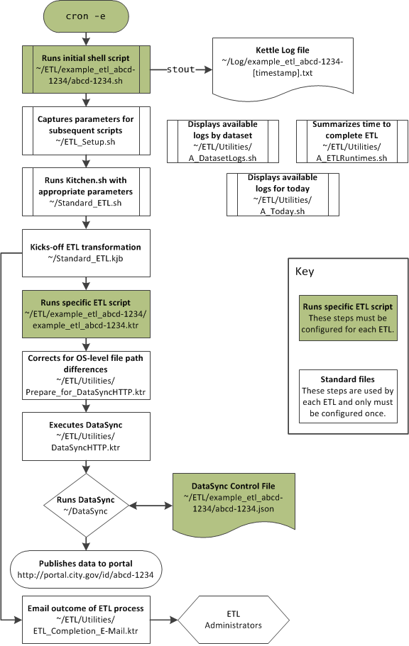

This section describes how to setup automation using Kettle. This is currently dependent on a number of bash scripts and is only compatible with MacOS X, Linux, and Unix operating systems.
There are a number of files and transformations used to support the entire ETL. The diagram below shows the workflow and relationship between various files.
The automated process is initiated using a bash script, Setup-Script.sh, to kick-off scripts. The author also needs to setup the timing of the scripts using cron jobs.
Setup-Script.sh is a standard template to be copied and used with each ETL. Suppose the dataset as a four-by-four of “abcd-1234”, then begin by moving the template to the appropriate directory:
$ cd /path/to/directory/open-data-etl-utility-kit
$ cp Setup-Script.sh Data_Set_Name_abcd-1234/abcd-1234.sh
Each file will need to be edited with the appropriate the name of the KTR file without the extension ETL_Name and the directory containing the ETL. Using the above example, the file should be edited with the following lines:
ETL_NAME=ata_Set_Name_abcd-1234
ETL_DIR_RELATIVE=Data_Set_Name_abcd-1234/
After editing, save the file.
The timing of the automated script is manged through cron jobs. Edit the cron job manager in the terminal by typing crontab -e in the shell. The cron job contains the starting script and also instructs the logging to be directed to the appropriate log files. For example:
* * * * * /path/to/directory/open-data-etl-utility-kit/ETL/Data_Set_Name_abcd-1234/abcd-1234.sh >> /path/to/directory/ETL/Data_Set_Name_abcd-1234/abcd-1234.log
The astrisks should be edited to meet the desired update schedules. A quick guides of those settings can be found on Wikipedia.
A simple way to test the process is to execute the following line in the command prompt:
/path/to/directory/open-data-etl-utility-kit/ETL/Data_Set_Name_abcd-1234/abcd-1234.sh >> /path/to/directory/ETL/Data_Set_Name_abcd-1234/abcd-1234.log
If correctly configured, the dataset should be updated, log files should be updated, and users should receive email alerts.